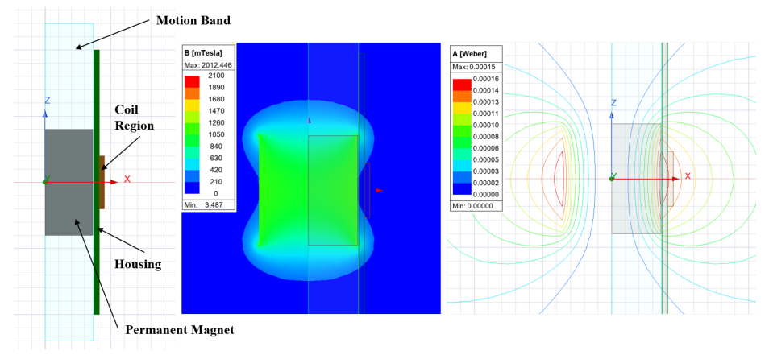
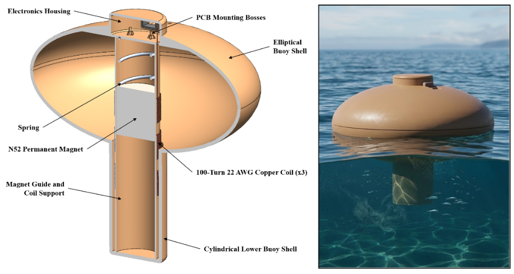
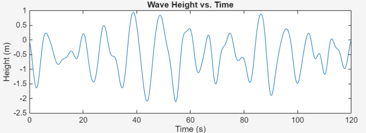
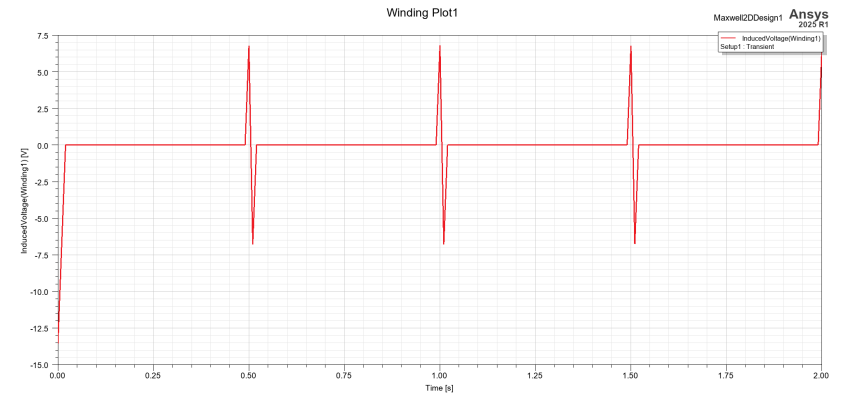
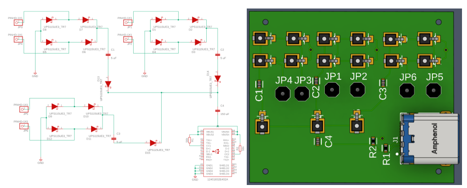
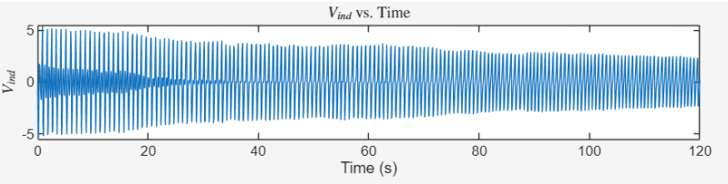

Phone Charger Buoy: Wave Energy Harvesting
1. Overview
Project Scope: Designed and simulated a small buoy capable of harvesting ocean wave energy to power and charge a smartphone along with a team of peers. The system converts vertical wave motion into electrical energy via a spring-augmented permanent magnet linear generator.
Design Constraints:
- Mass Budget: Total mass under 1.0 kg (achieved approx 0.75 kg).
- Buoyancy & Surface Stability: Designed to displace slightly less than 1 L of seawater (density ~1025 kg/m³) to float stably on the ocean surface.
- Electrical Target: Deliver a regulated output of 5 V DC at 1 A (5 W) via a standard USB-C phone charger.
2. Electromagnetic Feasibility Study Performed by Teammates
Initial system feasibility was evaluated using Ansys Maxwell transient 2-D electromagnetic simulations. The study modeled an N35 NdFeB permanent magnet oscillating through a 100-turn single coil to verify flux linkage and induced voltage generation under simulated wave displacement.
While the simulation proved concept viability and confirmed sufficient voltage spikes, it highlighted temporal dead zones between wave peaks, establishing the requirement for multiple stacked coils and a stronger N52 magnetic core in the final design.

3. Mechanical Design Primary Responsibility
I developed the complete SolidWorks CAD assembly, optimizing envelope geometry to satisfy tight weight limits while maximizing energy capture and bouyancy.
- Buoy Shell: Modeled a low-density polyethylene (LDPE) two-part housing consisting of an elliptical upper section for ideal surface buoyancy and a cylindrical lower section to house the generator tube and lower the center of gravity to prevent tipping.
- Generator Core: Integrated a cylindrical N52 NdFeB permanent magnet (1.48 T remanence), a guide cylinder supporting three 100-turn 22 AWG copper coils, and an upper excitation spring.
- Electronics Enclosure: Designed a sealed top electronics compartment featuring integrated PCB mounting bosses and a charging port.

4. Mathematical ModelingAssisted Team
To predict dynamic buoy behavior, governing equations of motion were derived in MATLAB. Deep-water ocean wave profiles were modeled using a referenced model (JONSWAP spectrum) over a 120-second simulation window.

JONSWAP Ocean Wave Model
Simulates random deep-water wave heights over a 120-second interval to provide realistic dynamic input forces on the buoy.

Faraday's Law Voltage Induction
Coupled magnet velocity with magnetic flux density gradients to compute instantaneous induced voltage across coil windings.
Using MATLAB's ode15s solver, buoy heave and relative magnet displacement were simulated under coupled equations of motion incorporating water displacement volume, damping coefficients, and an optimized spring constant of k = 473 N/m.
5. Electrical DesignAssisted Team
Because ocean waves produce variable alternating current (AC), a custom PCB was designed to condition the raw signal into a regulated DC output suitable for smartphone charging.
- Full-Bridge Rectifiers: Utilizes three full-bridge rectifier circuits (employing low Vf Schottky diodes) to convert AC input to DC output.
- OR-ing Diodes & Filtering: Incorporates safety OR-ing diodes to prevent reverse current feedback between coils along with a smoothing capacitor to minimize ripple.
- USB-C Integration: Output feeds into a USB-C port interface for standard consumer smartphone connectivity.

6. Results
MATLAB simulation results confirmed that the spring-augmented magnet sustained stable, rhythmic relative motion within the coil housing throughout wave action.

The optimized electromechanical system successfully met all core project goals:
- Peak Voltage: 5.45 V
- Peak Current: 9.23 A
- Sustained Power Output: 6.34 W (surpassing the 5 W target)
- Total Mass: 0.75 kg (comfortably under the 1.0 kg ceiling)
7. Future Improvements
- Coil Density Optimization: Expand the number of stator coils to increase cumulative flux linkage without exceeding the 1.0 kg total weight threshold.
- Loss Reduction: Explore thicker wire gauges or alternative winding geometries to minimize resistive losses in windings.
- Energy Storage Integration: Incorporate a trickle-charged lithium-polymer (Li-Po) buffer battery or supercapacitor bank to deliver steady, uninterrupted power during calm wave troughs.